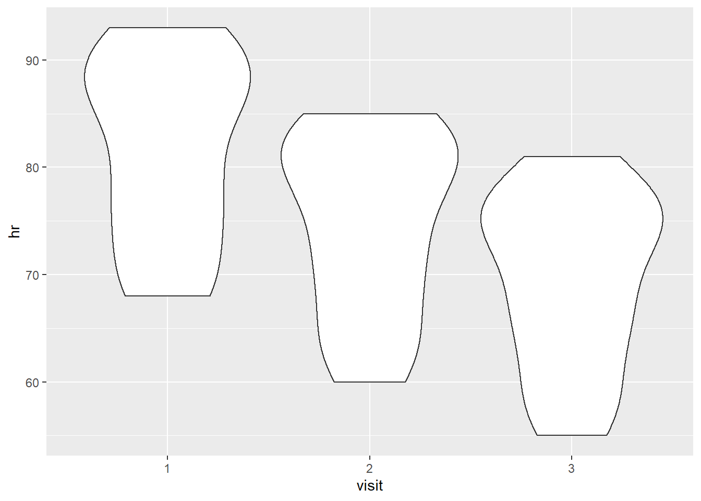
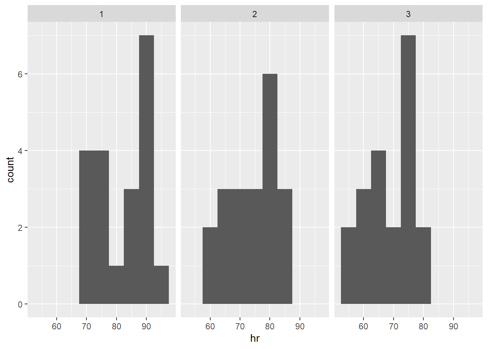
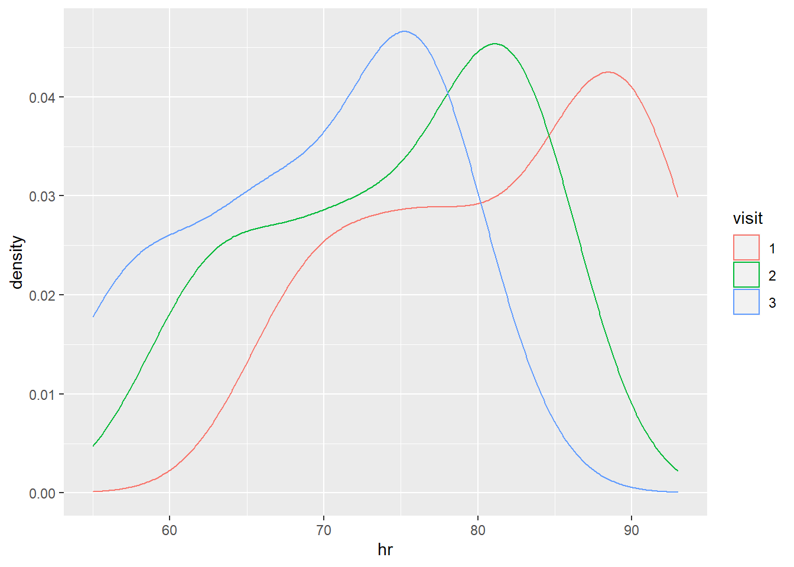
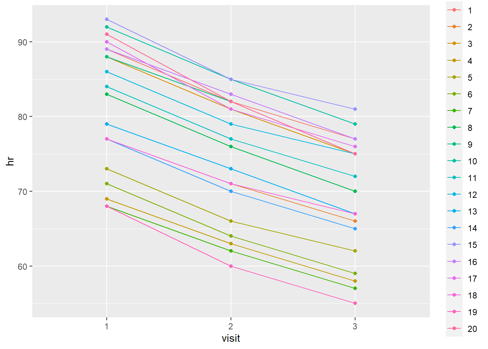
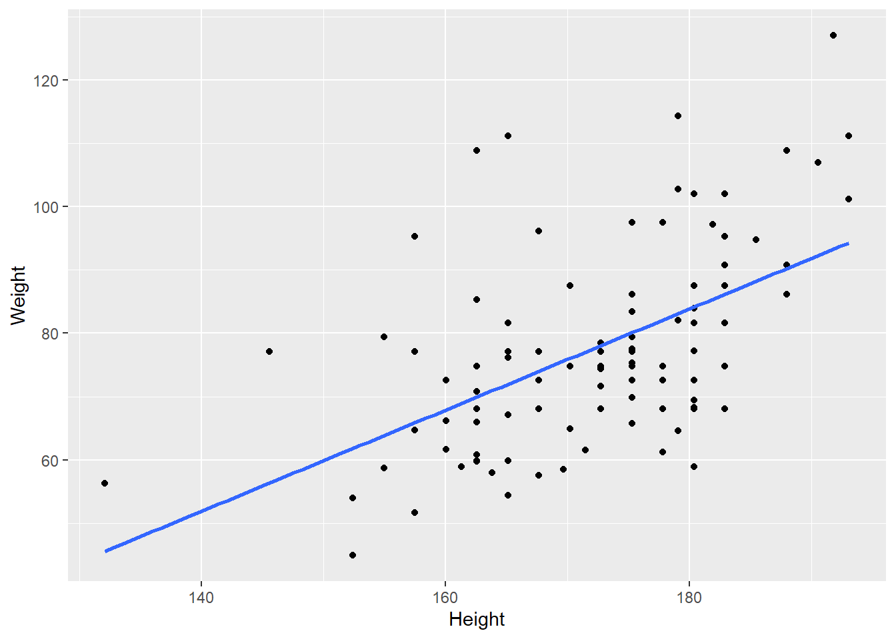

library(tidyverse)
library(lubridate)
library(readxl)
library(janitor)
library(tidymodels)
library(skimr)
library(medicaldata)Session 4
More practice, intro to modeling
Session 4: More practice, intro to modeling
Agenda
- Review of what we’ve learned using a new file
- Linear regressions
- Resources and approaches to keep learning
Review of what we’ve learned using a new file
We will use the messy_bp.xlsx file from the {medicaldata} GitHub. This file has one row per patient, but records HR and BP for 3 different visits. We’re going to clean, “tidy,” and visualize these data using what we’ve learned in sessions 2 and 3.
{forcats} cheat sheet, for working with factors (categorical variables): https://raw.githubusercontent.com/rstudio/cheatsheets/main/factors.pdf
Import data and fix patient IDs
stop <- read_excel("data/messy_bp.xlsx",
range = "A4:M24")New names:
• `BP` -> `BP...8`
• `HR` -> `HR...9`
• `BP` -> `BP...10`
• `HR` -> `HR...11`
• `BP` -> `BP...12`
• `HR` -> `HR...13`study_date <- as.Date("2020-10-20")
# fix duplicate patient IDs:
stop <- stop %>% mutate(pat_id = row_number())
View(stop)Clean variable names, calculate age, categorical variables as factors
stop <- stop %>%
clean_names()
stop <- stop %>%
mutate(birth_date =
make_date(year=year_birth,
month=month_of_birth,
day=day_birth),
.after=pat_id) %>%
mutate(age =
trunc((birth_date %--% study_date)/years(1)),
.after=birth_date) %>%
select(-c(year_birth,month_of_birth,day_birth,birth_date)) %>%
mutate(pat_id = as_factor(pat_id),
race = as_factor(race),
sex = as_factor(sex),
hispanic = as_factor(hispanic),
.after=age)Another function for quickly examining dataframes is glimpse() from {dplyr}, it fits every column on the screen (they are listed vertically), with data type and preview.
glimpse(stop)Rows: 20
Columns: 11
$ pat_id <fct> 1, 2, 3, 4, 5, 6, 7, 8, 9, 10, 11, 12, 13, 14, 15, 16, 17, 18…
$ age <dbl> 52, 29, 31, 43, 57, 47, 34, 63, 59, 52, 49, 50, 57, 31, 29, 3…
$ race <fct> White, Caucasian, White, Other, Black, Black, White, Asian, O…
$ sex <fct> Male, Female, Male, Female, Male, Female, Female, Female, Mal…
$ hispanic <fct> Hispanic, Not Hispanic, Hispanic, Not Hispanic, Not Hispanic,…
$ bp_8 <chr> "167/92", "158/99", "171/102", "155/88", "153/90", "161/94", …
$ hr_9 <dbl> 89, 77, 88, 69, 73, 71, 68, 83, 88, 92, 84, 86, 79, 77, 93, 8…
$ bp_10 <chr> "156/82", "147/90", "161/90", "143/80", "145/82", "152/86", "…
$ hr_11 <dbl> 82, 71, 81, 63, 66, 64, 62, 76, 82, 85, 77, 79, 73, 70, 85, 8…
$ bp_12 <chr> "144/71", "138/82", "153/82", "136/72", "133/74", "144/78", "…
$ hr_13 <dbl> 77, 66, 75, 58, 62, 59, 57, 70, 75, 79, 72, 75, 67, 65, 81, 7…Rename HR and BP; pivot visits longer
Currently, we have one row per patient. We want 3 rows per patient (one per visit, with BP and HR columns), because this would give us one observation per row. It should look like this:
| pat_id | visit | sbp | dbp | hr |
|---|---|---|---|---|
| 1 | 1 | 120 | 100 | 97 |
| 1 | 2 | 116 | 99 | 95 |
| 1 | 3 | 110 | 99 | 93 |
| 2 | 1 | 130 | 104 | 99 |
| 2 | 2 | 128 | 102 | 98 |
| 2 | 3 | 126 | 100 | 94 |
stop <- stop %>%
rename(v1_bp = bp_8, v2_bp = bp_10, v3_bp = bp_12) %>%
mutate(v1_hr = as.character(hr_9), v2_hr = as.character(hr_11), v3_hr = as.character(hr_13)) %>%
select(-c(hr_9, hr_11, hr_13)) %>%
pivot_longer(cols=c(ends_with(c("bp", "hr"))),
names_to="visit_measure",
values_to="value") %>%
separate(visit_measure, into=c("visit", "measure"))Pivot measures wider
pivot_longer() got rid of our separate visit columns, but BP and HR have ended up on separate rows. We have 6 rows per patient, instead of 3. So now we need to pivot_wider(), to transform the intermediate measure and value columns into BP and HR columns.
stop <- stop %>%
pivot_wider(names_from=measure, values_from=value)Clean visit, bp, and hr columns
visit should be a factor, and “v” is no longer needed. bp is currently character information which we can’t easily analyze; let’s separate it into two numeric variables, sbp and dbp. hr can now be converted to a numeric as well.
stop <- stop %>%
mutate(visit = as_factor(substr(visit,2,3))) %>%
separate(bp, into=c("sbp", "dbp")) %>%
mutate(sbp=as.numeric(sbp),
dbp=as.numeric(dbp),
hr=as.numeric(hr))Recode race
We have multiple values for “White” which should be collapsed into one category.
stop <- stop %>%
mutate(race = fct_collapse(race, `White` = c("White", "Caucasian", "WHITE")))
stop# A tibble: 60 × 9
pat_id age race sex hispanic visit sbp dbp hr
<fct> <dbl> <fct> <fct> <fct> <fct> <dbl> <dbl> <dbl>
1 1 52 White Male Hispanic 1 167 92 89
2 1 52 White Male Hispanic 2 156 82 82
3 1 52 White Male Hispanic 3 144 71 77
4 2 29 White Female Not Hispanic 1 158 99 77
5 2 29 White Female Not Hispanic 2 147 90 71
6 2 29 White Female Not Hispanic 3 138 82 66
7 3 31 White Male Hispanic 1 171 102 88
8 3 31 White Male Hispanic 2 161 90 81
9 3 31 White Male Hispanic 3 153 82 75
10 4 43 Other Female Not Hispanic 1 155 88 69
# … with 50 more rows
# ℹ Use `print(n = ...)` to see more rowsExamine tidied data
In addition to str()/glimpse() and summary(), check out also skim() from {skimr}.
Make sure to click through skim()’s multiple outputs: a Data Summary showing row/column counts and grouping metadata; and a distinct data frame for each data type (numeric, character…). The data frame has a row for each variable of that type, and columns according to the data type. So numeric variables show # missing (NA), mean, SD, quartiles, and even a mini histogram. (You’ll need to run skim(stop) directly in the console, not in the notebook, to see the histograms.) Factors say whether they are ordered, # unique values, and most frequent values with their counts.
str(stop)tibble [60 × 9] (S3: tbl_df/tbl/data.frame)
$ pat_id : Factor w/ 20 levels "1","2","3","4",..: 1 1 1 2 2 2 3 3 3 4 ...
$ age : num [1:60] 52 52 52 29 29 29 31 31 31 43 ...
$ race : Factor w/ 4 levels "White","Other",..: 1 1 1 1 1 1 1 1 1 2 ...
$ sex : Factor w/ 2 levels "Male","Female": 1 1 1 2 2 2 1 1 1 2 ...
$ hispanic: Factor w/ 2 levels "Hispanic","Not Hispanic": 1 1 1 2 2 2 1 1 1 2 ...
$ visit : Factor w/ 3 levels "1","2","3": 1 2 3 1 2 3 1 2 3 1 ...
$ sbp : num [1:60] 167 156 144 158 147 138 171 161 153 155 ...
$ dbp : num [1:60] 92 82 71 99 90 82 102 90 82 88 ...
$ hr : num [1:60] 89 82 77 77 71 66 88 81 75 69 ...glimpse(stop)Rows: 60
Columns: 9
$ pat_id <fct> 1, 1, 1, 2, 2, 2, 3, 3, 3, 4, 4, 4, 5, 5, 5, 6, 6, 6, 7, 7, 7…
$ age <dbl> 52, 52, 52, 29, 29, 29, 31, 31, 31, 43, 43, 43, 57, 57, 57, 4…
$ race <fct> White, White, White, White, White, White, White, White, White…
$ sex <fct> Male, Male, Male, Female, Female, Female, Male, Male, Male, F…
$ hispanic <fct> Hispanic, Hispanic, Hispanic, Not Hispanic, Not Hispanic, Not…
$ visit <fct> 1, 2, 3, 1, 2, 3, 1, 2, 3, 1, 2, 3, 1, 2, 3, 1, 2, 3, 1, 2, 3…
$ sbp <dbl> 167, 156, 144, 158, 147, 138, 171, 161, 153, 155, 143, 136, 1…
$ dbp <dbl> 92, 82, 71, 99, 90, 82, 102, 90, 82, 88, 80, 72, 90, 82, 74, …
$ hr <dbl> 89, 82, 77, 77, 71, 66, 88, 81, 75, 69, 63, 58, 73, 66, 62, 7…summary(stop) pat_id age race sex hispanic visit
1 : 3 Min. :29.00 White:33 Male :30 Hispanic :24 1:20
2 : 3 1st Qu.:32.00 Other: 6 Female:30 Not Hispanic:36 2:20
3 : 3 Median :46.00 Black:15 3:20
4 : 3 Mean :44.25 Asian: 6
5 : 3 3rd Qu.:52.25
6 : 3 Max. :63.00
(Other):42
sbp dbp hr
Min. :126.0 Min. : 68.00 Min. :55.00
1st Qu.:144.0 1st Qu.: 80.00 1st Qu.:68.00
Median :155.0 Median : 89.00 Median :76.00
Mean :155.3 Mean : 90.05 Mean :75.22
3rd Qu.:166.2 3rd Qu.: 98.00 3rd Qu.:82.00
Max. :192.0 Max. :194.00 Max. :93.00
skim(stop)| Name | stop |
| Number of rows | 60 |
| Number of columns | 9 |
| _______________________ | |
| Column type frequency: | |
| factor | 5 |
| numeric | 4 |
| ________________________ | |
| Group variables | None |
Variable type: factor
| skim_variable | n_missing | complete_rate | ordered | n_unique | top_counts |
|---|---|---|---|---|---|
| pat_id | 0 | 1 | FALSE | 20 | 1: 3, 2: 3, 3: 3, 4: 3 |
| race | 0 | 1 | FALSE | 4 | Whi: 33, Bla: 15, Oth: 6, Asi: 6 |
| sex | 0 | 1 | FALSE | 2 | Mal: 30, Fem: 30 |
| hispanic | 0 | 1 | FALSE | 2 | Not: 36, His: 24 |
| visit | 0 | 1 | FALSE | 3 | 1: 20, 2: 20, 3: 20 |
Variable type: numeric
| skim_variable | n_missing | complete_rate | mean | sd | p0 | p25 | p50 | p75 | p100 | hist |
|---|---|---|---|---|---|---|---|---|---|---|
| age | 0 | 1 | 44.25 | 11.04 | 29 | 32 | 46 | 52.25 | 63 | ▇▁▅▅▅ |
| sbp | 0 | 1 | 155.33 | 15.00 | 126 | 144 | 155 | 166.25 | 192 | ▅▆▇▆▁ |
| dbp | 0 | 1 | 90.05 | 18.28 | 68 | 80 | 89 | 98.00 | 194 | ▇▃▁▁▁ |
| hr | 0 | 1 | 75.22 | 9.58 | 55 | 68 | 76 | 82.00 | 93 | ▃▅▇▆▃ |
Plot tidied data
Below are a few ways to plot these data, focusing on visit, but of course there are many more possibilities.
The facet_wrap() example uses the typical geom_histogram(), mapped to hr, then adds a layer for visit which “facets” or subplots the histogram into one per each visit.
The last example, using geom_path(), requires that you supply the group aesthetic mapping, so that it knows which nodes to connect.
Remember that if you wonder about any function you see used, you can search it in the help system, by running, e.g., ?geom_path
stop %>%
ggplot(aes(x=visit, y=hr)) +
geom_violin()
stop %>%
ggplot(aes(hr)) +
geom_histogram(binwidth=5) +
facet_wrap(~ visit)
stop %>%
ggplot(aes(x=hr, color=visit)) +
geom_density()
stop %>%
ggplot(aes(x=visit, y=hr, color=pat_id)) +
geom_point() +
geom_path(aes(group=pat_id))
Linear regressions
R’s function to calculate a correlation coefficient is cor(). To use it with your dataframes and {dplyr}, use it inside of summarize(). You can also use groupings this way.
smartpill %>%
summarize(cor(Height, Weight)) cor(Height, Weight)
1 0.5384256smartpill %>%
group_by(Gender) %>%
summarize(cor(Height, Weight))# A tibble: 2 × 2
Gender `cor(Height, Weight)`
<dbl> <dbl>
1 0 0.395
2 1 0.466Because of R’s long history as a statistical software, base-R has many builtin functions for modeling and tests. lm() is an example which fits a linear model to the formula you supply.
Formulas have a left-hand side (LHS), a tilde (~), and a right-hand side (RHS), i.e., LHS ~ RHS. A model formula is typically structured as response ~ explanatory, e.g., Weight ~ Height. Multiple terms may be combined within one side or the other using operators like + and *.
When you run lm() or other modeling functions, they will create a model object, which you’ll assign to an object as you would a data frame. summary() gives readable info about a linear model.
hw_model <- lm(Weight ~ Height, data=smartpill)
hw_model
Call:
lm(formula = Weight ~ Height, data = smartpill)
Coefficients:
(Intercept) Height
-59.8601 0.7985 summary(hw_model)
Call:
lm(formula = Weight ~ Height, data = smartpill)
Residuals:
Min 1Q Median 3Q Max
-25.170 -10.040 -2.490 6.741 39.162
Coefficients:
Estimate Std. Error t value Pr(>|t|)
(Intercept) -59.8601 22.3310 -2.681 0.00869 **
Height 0.7985 0.1296 6.162 1.82e-08 ***
---
Signif. codes: 0 '***' 0.001 '**' 0.01 '*' 0.05 '.' 0.1 ' ' 1
Residual standard error: 13.61 on 93 degrees of freedom
Multiple R-squared: 0.2899, Adjusted R-squared: 0.2823
F-statistic: 37.97 on 1 and 93 DF, p-value: 1.824e-08We can also use lm as a method for fitting geom_smooth() in ggplot2:
smartpill %>%
ggplot(aes(x=Height, y=Weight)) +
geom_point() +
geom_smooth(method="lm", formula=y ~ x, se=FALSE)
Because R accumulated many statistical functions over time in a decentralized way, there aren’t consistent design patterns, making the quirks of different functions and packages annoying to learn and use. {tidymodels} is an umbrella package which brings together many modeling functions under a common interface which is compatible with tidyverse structures and functions.
Resources and approaches to keep learning
- Approaches
- Work through a free ebook about a topic such as modeling, machine learning, bioinformatics in R, or geospatial analysis (see Resources below)
- Follow #RStats on Twitter, explore what people are talking about
- Tidy Tuesday: “Join the
R4DS Online Learning Communityin the weekly#TidyTuesdayevent! Every week we post a raw dataset, a chart or article related to that dataset, and ask you to explore the data. While the dataset will be”tamed”, it will not always be tidy! As such you might need to apply variousR for Data Sciencetechniques to wrangle the data into a true tidy format. The goal ofTidyTuesdayis to apply your R skills, get feedback, explore other’s work, and connect with the greater#RStatscommunity! As such we encourage everyone of all skills to participate!” - Join
discoRd, the R users’ Discord server: https://discord.gg/wmkCdwK
- Resources
Big Book of R, a comprehensive directory of books, many of which are free ebooks
R for Data Science (R4DS), a standard intro ebook, covering much of the content of this course more thoroughly
ModernDive, similar to R4DS, with more of an emphasis on statistics (modeling, tests, etc.)
The Book of R (Davies, 2016) is a good general reference for base R; also has exercises
LinkedIn Learning has some R content if you prefer video